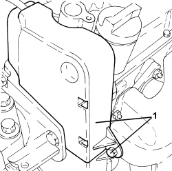

1032D26 TIMING SYSTEM FRONT PROTECTIVE COVER (UPPER PART) - R.R.
- Path
- Procedures > 10 ENGINE > 1032 TIMING SYSTEM > 1032D TIMING SYSTEM PROTECTIONS > 1032D26 TIMING SYSTEM FRONT PROTECTIVE COVER (UPPER PART) - R.R.
- Kind
- repair procedure (removal / refitting; the operation number is the code)
- Applies to
- engines: 1.4 8v; all production periods
- Interactive page
- https://sloeber94.github.io/elrnDB-fDbl/en/#/223000123
Applies to: engines: 1.4 8v; all production periods
 Removing
Removing
 Refitting
Refitting1. Undo the bolts and remove the upper protective timing cover.

Applies to: engines: 1.4 8v; all production periods
Refitting
Removing- Fit the upper timing belt covers and secure them using the bolts.
Topics that link to this page (13)
- 1016A20 single cam cover - r + r and replace gasket
- 1016C10 cylinder head - r + r and replace gasket
- 1020D14 front crank shaft oil seal cover - r + r and replace seals for versions with oil pump on crank shaft, timing side
- 1032B10 toothed timing belt - r + r for timing adjustment or replacement
- 1032B14 toothed timing belt - r + r for timing adjustment or replacement versions with air conditioner
- 1032B60 bolt pulley - r r
- 1032B62 TIMING BELT TOOTHED PULLEY - R.R. FOR VERSIONS WITH AIR CONDITIONING
- 1032D27 TIMING SYSTEM FRONT PROTECTIVE COVER (LOWER PART) - R.R.
- 1036B10 overhead camshaft - r r on vehicle
- 1036C39 PHASE TRANSFORMER ON INLET CAMSHAFT IN CYLINDER HEAD - R.R.
- 1036H14 valve tappets - check clearance
- 1036H18 VALVE TAPPETS - Adjust. following clearance check
- 1088C10 water pump - r + r